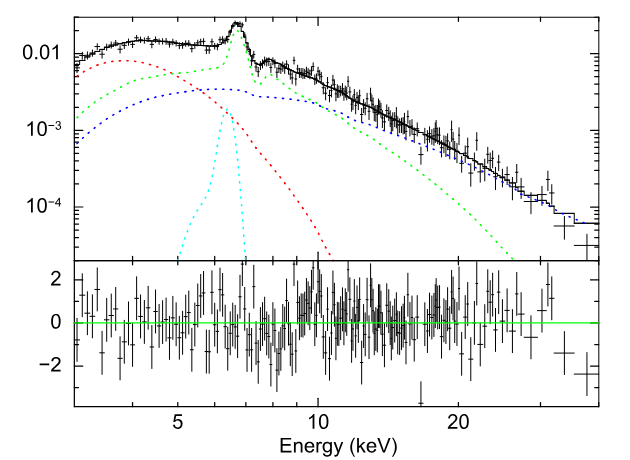

A Review of the Evidence
In light of the observational evidence, it is easy to come away with the conclusion that all is said and done. And indeed, especially with the Event Horizon Telescope pictures, it is certainly to say we have more direct evidence for their existing as real, astrophysical phenomena, than for even our best theories of the universe's evolution into what we see today (that is not to say we have little evidence for those; rather, by comparison, there is far more evidence for black holes). However, before we get ahead of ourselves, it is instead more practical to consider the evidence holistically, and use that to justify the confidence which we place in it.
First, let it be considered that black holes were first a theoretical -- and distrusted -- prediction of General Relativity, nearly half a century before the first astrophysical candidates were detected. General Relativity is today one of the best-tested scientific theories, ever. Every prediction made by General Relativity within the realms of our current technology to test has been shown to be true. Gravitational waves, frame-dragging, the precession of the aphelion, gravitation lensing, and so on, are all predicted by the theory. While they may perhaps be individually less incredible than the idea of the black hole, together they provide substantial supporting reason to not doubt the idea wholesale. If such things as space-time gravitational waves can exist, is it really that extraordinary to claim that so too can a gravitational singularity?
Observational Evidence
Of course, it would be foolish to make the claim solely based on theoretical evidence. Even given that theory permits it, it could perhaps for other reasons be impossible -- perhaps there's no reasonable mechanism for one to form, or maybe there is some other reason they cannot exist, like some kind of cosmic censorship. Therefore, until observing began in earnest with the 70s, the physical existence of black holes was very much an open question. Very quickly, observational astronomy returned with candidates. The famous Cygnus X-1 was very early on an a prime candidate, and today we know that it has a mass on the order of 21 times that of the sun. Even the most generous values of the Tolman-Oppenheimer-Volkoff Limit would not allow a neutron star, the most likely other type of candidate compact object. With no other reasonable alternatives, the only last escape is that there is some other kind of hitherto unknown compact object, that is not a black hole; however pending such an object being described a black hole remains the most likely explanation.
Avoiding re-iteration, it is also extremely difficult to explain the observations of galactic center behavior without another kind of extremely dense, heavy, and invisible type of object -- on the order of 4 million Suns -- it is impossible to explain the dynamical behavior of the stars near to the center of the Galaxy. Perhaps the only other option is an exceptionally dense region of dark matter, but then we would neither see the same kind of spectra (see right), nor the same radio profile, as seen by the Event Horizon Telescope.
Beyond that, we also have self-consistent models for the formation of black holes, from core-collapse supernovae, to direct collapse to supermassive black holes, or perhaps even more exotic -- but still perfectly reasonable -- models like that of the immensely massive quasi-star from the early universe. No matter which way we take it, there is an awful lot of evidence here, collected over decades of study, and with ample theoretical basing behind it.
In aggregate, there is quite a bit of evidence for black holes, despite their extreme nature. From stellar-mass black holes which form binary pairs, yet which are too small and too massive to be anything else, to direct imaging of the most massive compact objects in the universe, it is hard to find another equally extreme yet equally-supported type of object. Some are still skeptical, perhaps, but that is in spite of the evidence and not because of it. Black holes are a prime example of how even absurd predictions can sometimes come true, and how intuition isn't everything in science. Sometimes, just trust the math, and then reality will show that you're right.